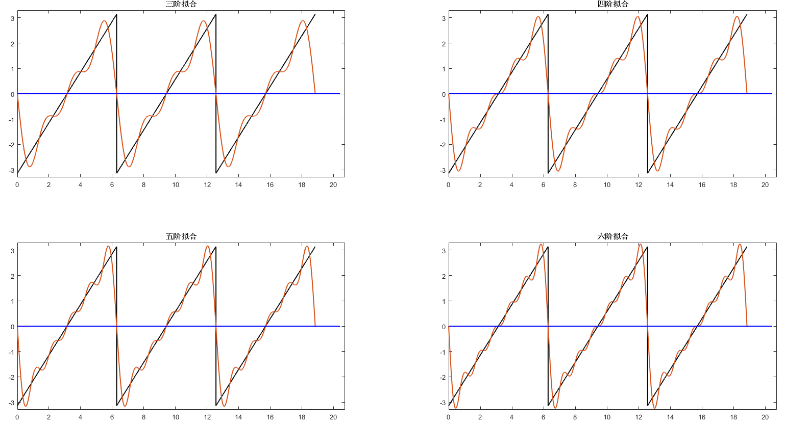
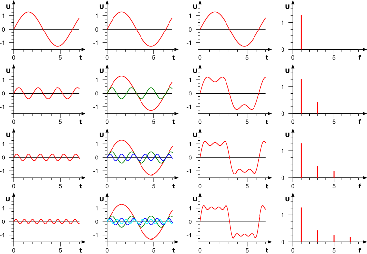
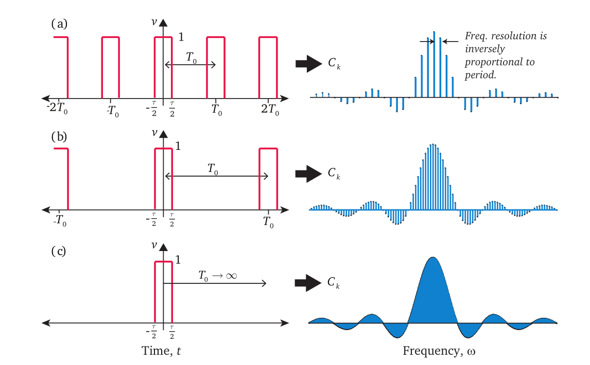

4.1.2 傅里叶分析
傅里叶级数¶
傅立叶级数源于一个对周期函数进行分解的猜想：十七世纪中叶，拉格朗日等数学家发现，某些周期函数可以由三角函数的和来表示。如下面例子所示，对于一个周期为2\pi的锯齿形波，通过不断叠加具有不同的周期的三角函数，我们可以使叠加结果逐渐逼近原本的锯齿形波。我们使用MATLAB仿真来更加直观地理解这一过程：
1 2 3 4 5 6 | %% 原始信号：周期为2pi的锯齿形波 fs = 1e3; t = 0:1/fs:6*pi; y = -pi + mod(t,2*pi); figure; plot(t,y,'color','black','linewidth',1.5); |

1 2 3 4 5 6 7 8 | %% 使用最小周期为2pi的基础正弦波sin(x)拟合锯齿波 z = -2*sin(t); hold on plot(t,z,'linewidth',1.5); plot([0,6.5*pi],[0 0],'color','blue','linewidth',1.5); xlim([0,6.6*pi]); ylim([-3.3 3.3]); box on |

1 2 3 4 5 6 7 8 | %% 叠加最小周期为pi的基础正弦波sin(2x)做二阶拟合 z = -2*sin(t) - sin(2*t); hold on plot(t,z,'linewidth',1.5); plot([0,6.5*pi],[0 0],'color','blue','linewidth',1.5); xlim([0,6.6*pi]); ylim([-3.3 3.3]); box on |

继续叠加与锯齿波具有相同周期的三角函数 (即\sin(nx)，其中n\in \mathbb{R})，使拟合的结果不断地逼近初始的锯齿形波：
1 2 3 4 5 6 7 8 9 10 11 12 13 14 15 16 17 18 19 20 21 22 23 24 25 26 27 | %% 不同阶数三角函数叠加结果示意 figure; z = -2*sin(t) - sin(2*t) - 2/3*sin(3*t); subplot(2,2,1);fplot(t,y,z); title('三阶拟合'); z = -2*sin(t) - sin(2*t) - 2/3*sin(3*t) - 1/2*sin(4*t); subplot(2,2,2);fplot(t,y,z); title('四阶拟合'); z = -2*sin(t) - sin(2*t) - 2/3*sin(3*t) - 1/2*sin(4*t) - 2/5*sin(5*t); subplot(2,2,3);fplot(t,y,z); title('五阶拟合'); z = -2*sin(t) - sin(2*t) - 2/3*sin(3*t) - 1/2*sin(4*t) - 2/5*sin(5*t) - 1/3*sin(6*t); subplot(2,2,4);fplot(t,y,z); title('六阶拟合'); function fplot(t,y,z) hold on; plot(t,y,'color','black','linewidth',1.5); plot(t,z,'linewidth',1.5); plot([0,6.5*pi],[0 0],'color','b','linewidth',1.5); xlim([0,6.6*pi]); ylim([-3.3 3.3]); box on; end |

从上面的例子可以看到，为了拟合一个周期函数，我们需要使用多种不同周期的三角函数，调整他们的振幅并叠加。那么，给定任意一个周期函数，是否都能将其表示为三角函数和的形式？如果可以表示，则每个用于叠加的三角函数周期是多少？函数振幅又是多少？
傅立叶针对上述问题进行研究，设计出了无穷级数形式的周期函数展开方法，后人称该周期函数展开方法为傅立叶级数（Fourier Series）。傅立叶宣称，任何周期函数（无论连续与否）皆可用傅立叶级数表示。傅立叶级数给出了周期函数展开成三角函数的理论证明，确定了展开式中各项的周期和振幅。但在级数使用范围这一问题上，傅立叶的结论并不准确，德国数学家狄利克雷证明了某些情况下的周期函数无法用傅立叶级数表示，并率先给出了周期函数可展开成傅立叶级数的条件，即狄利克雷条件：
- 此函数必须是有界的(bounded)，即对于任意x，|f(x)|<M，M是一正实数；
- 在任意区间内，除了有限个不连续点，f(x)必须是连续函数；
- 在任意区间内，f(x)必须仅包含有限个极值；
- 在一周期内，|f(x)|的积分必须收敛。
尽管适用性限定于满足迪利克雷条件的函数，傅立叶级数现今已然是应用数学的基本工具，在信号处理、图像处理、计量经济、震动分析、声学、光学等领域都有广泛的应用。
本文剩余部分将介绍傅立叶级数的具体内容，探究其将周期函数分解为三角函数和的过程。
从上文的分析中我们知道，傅立叶级数分解周期函数，本质上只需要解决两个问题： 1. 周期函数的分解结果应该包含哪些项？ 2. 每一项的系数分别是多少？
首先回答第一个问题： 遵循从特殊到一般的规律，我们先考虑一种特殊的函数——常数函数。对于常数函数，相隔任意位置取值的结果都相同，因此根据周期函数的定义，常数函数是周期函数且周期可以是任意实数。常数本身已经是最简的形式，因此，对常数函数进行分解，结果应该只包含唯一的常数项。更一般的，对任意一个包含常数分量的周期函数，其分解结果中一定包含一个常数项。
接下来我们考虑，除常数项外，周期函数的分解结果还应该包含哪些项？ 我们知道三角函数包括\sin(x)和\cos(x)，其中\sin(x)是奇函数，而\cos(x)是偶函数。如果分别用f_{odd}(x)和f_{even}(x)分别表示奇函数和偶函数，则函数运算的奇偶性可以表示为：
即奇函数与奇函数相加减只能得到奇函数，偶函数与偶函数相加减只能得到偶函数。而任意函数f(x)，都可以被表示为：
显然f(x)+f(-x)是偶函数，而f(x)-f(-x)是奇函数，因此可以得到结论：对任意函数f(x)（无论奇偶）进行分解，其结果一定同时包含奇函数和偶函数。因此，单独使用\sin(x)或\cos(x)都无法表示所有的周期函数分解结果，分解一个一般的周期函数，一定需要同时使用\sin(x)和\cos(x)。
我们现在已经知道，周期函数的分解结果一定同时包含\sin(x)项和\cos(x)项，接下来需要确定每个三角函数项的周期应该是多少？显然，当分解一个周期为T的函数时，如果能够保证每个分解分量的周期都为T，那么他们相加结果的周期一定等于T。对三角函数而言，周期为T的三角函数都可以表示为：sin(\frac{2\pi n}{T}x)或cos(\frac{2\pi n}{T}x)，其中n\in \mathbb{N}。因此，如果已知输入函数的周期T，则使用sin(\frac{2\pi n}{T}x)或cos(\frac{2\pi n}{T}x)进行加减，一定能保证组合的结果与输入函数的周期相同。
通过以上分析，我们可以得到，当分解一个周期函数，其分解结果应该满足以下三点：
- 有常数项
- 同时包含sin(x)和cos(x) （奇函数和偶函数可以组合出任意函数）
- 所有分量，最小周期都为T或T的整数分之一
故给定一个周期为T的函数f(x)，其三角函数分解的结果可以表示为：
通过上面的式子，我们用一组最基础的三角函数，实现了对任意周期函数的表示。
接下来解决第二个问题：如何确定上式中各分解项的系数？
在上面的求和式中，除系数外的其他部分（即cos(\frac{2 \pi n}{T} x)和sin(\frac{2 \pi n}{T} x)）不会随f(x)的不同而变化，而常数项C也可以认为是在1的基础上针对不同f(x)进行缩放的结果。因此，我们可以把
视作一组基底，而把系数\{C\; a_n\; b_n\}视为f(x)在这组基底下的坐标。有了这个结论之后，我们再来看如何求坐标。
我们先看个向量的例子，假设\vec{u}和\vec{v}是两个相互正交的向量基底（即\vec{u} \cdot \vec{v} = 0），则任意向量\vec{w}可以通过\vec{u}和\vec{v}的线性组合得到：
例如当a=2, b=3时，\vec{w}的图示为

显然，在这种情况下，对任意\vec{w}，正交基的系数（a或b）等于\vec{w}在该正交基上的投影除以该正交基的长度，即：
我们将上述结论推广到三角函数基中（即sin(nt)和cos(nt)），在无限维的希尔伯特空间中，函数向量的点积可以定义：
其中，f(x)是函数向量，g(x)是基，T是f(x)的周期。那么，对于我们之前分析的三角函数基底
显然该集合中的任意两基底互相正交：
既然是正交基，那么根据刚才的分析，f(x)在这组基底下的坐标等于：
最终我们可以得到
其中：
此外，根据欧拉公式：e^{jx}=\cos(x)+j\sin(x)和e^{-jx}=\cos(x)-j\sin(x)，我们可以得到
代入到用正余弦表示的傅立叶级数展开式中，我们就得到了傅立叶级数的复数表达式：
至此，给定任意一个满足迪利克雷条件的周期函数，我们都能将其转化为三角函数的线性组合，并且可以准确求出对于每一阶三角函数，对应的傅立叶系数(Fourier Coefficient)应该是多少。
接下来，我们用一个例子，带大家更直观地理解傅立叶级数的计算过程。考虑我们有一个周期为2\pi的方波，现在需要将其展开为三角函数表示的无穷级数形式。 首先使用MATLAB构造周期为2\pi的方波函数：
1 2 3 4 5 6 7 8 | %% 方波的傅立叶级数展开 % 构造周期为2pi的方波 fs = 1e3; t = 0:1/fs:6*pi; y = square(t,50); figure; plot(t,y,'color','black','linewidth',1.5); ylim([-2 2]); |

根据傅立叶级数，我们可以计算每一阶三角函数对应的傅立叶系数：
类似的，
因此，我们可以使用上面的式子，在MATLAB中计算展开成无穷级数后，各阶三角函数的傅立叶系数：
1 2 3 4 5 6 7 8 9 10 11 12 13 14 15 16 17 18 19 20 | % 计算傅立叶系数 z = zeros(1,length(y)); syms x; for i = 1:2:11 % cos(nx)的傅立叶系数 Fx1 = 1*cos(i*x); Fx2 = -1*cos(i*x); an = 1/pi*double(int(Fx1,x,0,pi)) + 1/pi*double(int(Fx2,x,pi,2*pi)); % sin(nx)的傅立叶系数 Fx1 = 1*sin(i*x); Fx2 = -1*sin(i*x); bn = 1/pi*double(int(Fx1,x,0,pi)) + 1/pi*double(int(Fx2,x,pi,2*pi)); z = z + an*cos(i*t) + bn*sin(i*t); % 绘图 subplot(3,2,ceil(i/2));hold on plot(t,y,'color','black','linewidth',1.5); plot(t,z,'color','b','linewidth',1.5); ylim([-2 2]); end |

傅里叶变换¶
使用傅立叶级数，我们可以将任意满足迪利克雷条件的周期函数，展开成正弦信号和余弦信号的和。由于展开式中的每一个正弦和余弦分量仅包含单一的频率，因此我们可以进而从中提取信号中各频率分量的强度——即信号频谱。至此，我们利用傅立叶级数，最终实现了信号从时域到频域的转换。

但是，傅立叶级数仅仅适用于满足迪利克雷条件的周期函数，对于更一般的非周期函数，我们又该如何将它从时域转换到频域呢？为了解决这一问题，傅立叶公爵在傅立级数的基础上进一步提出了傅立叶变换(Fourier Transform)的方法，用于实现非周期的一般信号在时域和频域之间的变换。
在傅立叶级数中，输入的信号必须是周期信号，时域信号的周期T_0决定了频域上相邻两个输出之间的距离，即\delta f = \frac{1}{T_0}。当输入信号的周期不断增大，得到频域输出之间的距离随之不断减少。当周期T_0不断增加直至趋近于\infty，此时周期信号退化为非周期性的一般时域信号，而该信号对应的频域输出距离此时也趋近于0，即非周期的时域信号对应一连续的频域输出。

讲到这，我们先暂停一会，花一点时间思考：频域连续究竟意味着什么？在之前介绍傅立叶级数的时候，我们说过傅立叶级数源于一个“使用三角函数对周期函数进行分解”的猜想。在分解一个周期为T、且满足迪利克雷条件的函数时，我们所作的工作是选取以T为周期的正余弦函数做为基底，计算目标函数在各个基底上的投影。由于基底的频率是离散的(n\times\delta f = \frac{n}{T})，因此频域的输出也是离散的。参考这一过程，当某个函数f(x)的频域输出为连续值，说明要分解f(x)，需要使用所有频率的正余弦做为基底（而不仅仅是周期为T的正余弦函数），因此f(x)的分解可以表示为：
其中，F(\omega)表示频率\omega处的傅立叶系数，参考复数形式傅立叶级数中求系数的方法，当T\rightarrow\infty，可以得到频率\omega处的系数F(\omega)：
显然F(\omega)就是f(x)对应到频域上的输出，从f(x)到F(\omega)的过程就是傅立叶变换(Fourier Transform, FT)。反之，从F(\omega)到f(x)的过程称为傅立叶逆变换(Inverse Fourier Transform, IFT)。显然，和傅立叶级数一样，能进行傅立叶变换的时域信号必须满足迪利克雷条件。
离散时间傅里叶变换¶
离散时间傅里叶变换(Discrete-Time Fourier Transform, DTFT)
离散傅里叶变换¶
离散傅里叶变换（Discrete Fourier Transform, DFT），对于N点序列\{x[n]\}_{0 \leq n<N}，它的DFT为
DFT的逆变换（IDFT）为：
实际上，DFT和IDFT变换式中和式前面的归一化系数并不重要。在上面的定义中，DFT和IDFT前的系数分别为1和\frac{1}{N}，有时会将这两个系数都改成\frac{1}{\sqrt{N}}。
DFT虽然可以计算有限时间内的频谱，但它的计算复杂度是O(n^2)的，计算量过大，限制了在实际中的应用。下面我们介绍的FFT算法可以把DFT的计算复杂度降为O(n\log n)，从而将傅里叶变换推往实用。
快速傅里叶变换 (FFT)¶
在20世纪60年代中期，一种称之为快速傅里叶变换（Fast Fourier Transform, FFT）的算法被引入，它是快速计算序列的离散傅里叶变换（DFT）或其逆变换的方法。这一算法在1965年被库利（Cooley）和图基（Tukey）独立地发现，其实它也有相当长的历史。事实上，这一算法在高斯的手稿中已能找到。之所以使得它成为重要的近代发现是由于FFT被证明是非常适合于高效的数字实现，并且它将计算变换所需要的时间减少了几个数量级。有了这一算法，在利用离散时间傅里叶级数和变换中许多有趣而过去认为不切实际的想法突然变得实际起来，并且使离散时间信号于系统分析技术的发展加速向前迈进。
傅里叶分析将信号从原始域（通常是时间或空间）转换到频域的表示或者逆过来转换。FFT会通过把DFT矩阵分解为稀疏（大多为零）因子之积来快速计算此类变换。因此，它能够将计算DFT的复杂度从只用DFT定义计算需要的 O(n^{2})，降低到 O(n\log n)，其中 n 为数据大小。
快速傅里叶变换广泛的应用于工程、科学和数学领域。这里的基本思想在1965年才得到普及，但早在1805年就已推导出来。1994年美国数学家吉尔伯特·斯特朗把FFT描述为“我们一生中最重要的数值算法”，它还被IEEE科学与工程计算期刊列入20世纪十大算法。
FFT的一个应用：大数乘法¶
在学习程序设计课程的时候，我们都写过大数乘法，其实现是模拟手工列竖式计算，计算复杂度为O(n^{2})。通过FFT，我们可以将大数乘法的复杂度变为O(n\log n)。
设A和B是两个很大的数，C=A\cdot B。把这两个数写成多项式的形式，（不足位数补前导零）
以下对A的叙述对B同理。其中a_0, a_1, \cdots, a_{n−1}分别表示A的第一位、第二位……第n位。这样我们就能用一个向量(a_0, a_1, \cdots ,a_{n−1})来表示A，这种表示方法叫做系数表示法，当x取10时就是我们常用的十进制。
我们知道多项式除了有系数表示法，还有点值表示法（拉格朗日插值），n个点可以唯一确定一个多项式。例如当我们知道(0, A(0)), (1, A(1)), \cdots, (n-1, A(n-1))这些点时，A也就是已知的。
下面我们考虑这样一种计算方法
- 将A, B的系数表示变为点值表示。
- 计算点值表示的乘积，即(0, C(0)), \cdots, (n-1, C(n-1))=(0, A(0)\cdot B(0)), \cdots, (n-1, A(n-1)\cdot B(n-1))
- C的点值表示已经确定了C，将其转化为系数表示即求得对应大数乘积。
步骤2的复杂度为O(n)，但步骤1和3的朴素算法复杂度是O(n^{2})，看似没有降低总体的复杂度，但这个思路给了我们优化它的可能。
观察大数的多项式表示，其实是一个求和，而DFT也是一个求和。如果x取为DFT里对应各频率的单位复根（点值表示法的取点是任意的，我们可以在复平面上任取n个点），那么“将A的系数表示变为点值表示”这一操作等价于“求解A的离散傅里叶变换”，点值表示化为系数表示则对应于逆傅里叶变换。由于FFT的存在，步骤1和3的算法复杂度都变成了O(n\log n)，于是总体计算大数乘法的时间复杂度也变成了O(n\log n)。
TODO 大数乘法FFT画个图